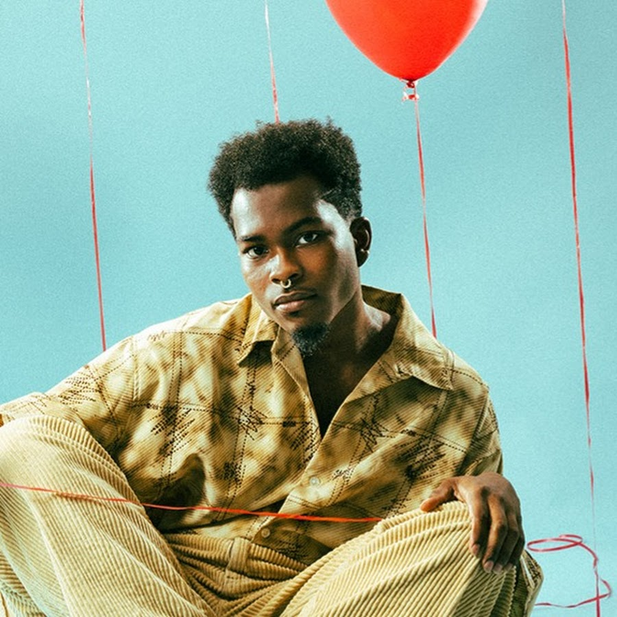

Jhariah Clare

Jhariah Clare is an independent musician who aptly describes his musical style as "No Genre, All Drama."
Why I love Jhariah
I love Jhariah's raw, dramatic energy as well as his unique musical style. So much of his music not only speaks to me on a deep emotional level, but also just resonates with me musically.
Jhariah is a true creative, not only musically but also artistically. Jhariah's music speaks to the theater kid, the depressed middle schooler, and the self-assured adult all at once. His music
is truly just "Oops, all bangers."
If You Like Jhariah
There's no other artist quite like Jhariah, but if you like him, chances are you'll like these other artists too: